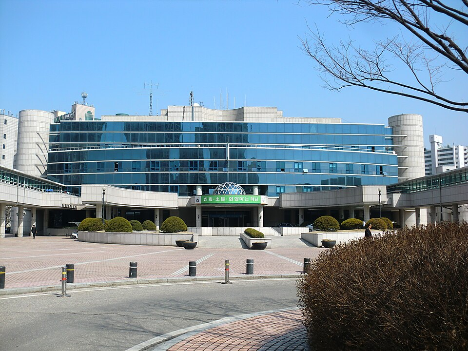

하남 검정고시 — 수학과 과학을 같이 잡는 순서

수학과 과학은 보통 가장 나중으로 미루는 두 과목입니다. 그런데 미뤄 두었다가 막판에 둘을 한꺼번에 시작하면, 과학을 보다가 수학에서 막히고 수학을 보다가 시간이 다 가는 일이 생깁니다. 경기 하남 검정고시를 준비하면서 이 둘을 어떤 순서로 묶으면 되는지 정리했습니다.
과학이 안 풀릴 때, 막힌 건 과학이 아닌 경우가 많습니다
과학 문제를 풀다가 멈추는 자리를 들여다보면 단위를 바꾸거나 식을 옮기는 대목인 경우가 많습니다. 개념 설명은 다 이해했는데 숫자를 넣는 순간 손이 안 나가는 겁니다. 이건 과학을 더 읽는다고 풀리지 않습니다.
그래서 두 과목을 같이 할 때는 수학을 반 발 먼저 보내는 배치가 낫습니다. 비례·단위·간단한 식 정리를 먼저 손에 익혀 두면, 같은 과학 단원을 볼 때 걸리는 시간이 눈에 띄게 줄어듭니다. 순서를 반대로 하면 과학에서 막힐 때마다 수학으로 돌아갔다 오느라 두 번 일하게 됩니다.
과학은 계산보다 용어를 먼저 잡으세요
과학 문제는 계산보다 말을 못 알아들어서 틀리는 경우가 꽤 있습니다. 보기에 나온 용어 하나를 몰라서 답을 못 고르는 식입니다. 이건 공부량이 아니라 단어 문제라 처방이 다릅니다.
단원을 시작할 때 그 단원에 나오는 용어만 먼저 훑어 두시길 권합니다. 뜻을 한 줄씩만 정리해 두면 됩니다. 이 작업은 길어야 10분인데, 문제를 풀 때 걸리는 시간을 가장 많이 줄여 줍니다.
수학은 범위를 줄이고, 과학은 단원을 고르세요
두 과목은 성격이 달라서 분량을 줄이는 방법도 다릅니다. 수학은 앞 단원을 모르면 뒤가 안 되는 과목이라 범위를 앞에서부터 잘라 거기까지만 확실히 하는 편이 낫습니다. 어설프게 끝까지 훑는 것보다 점수가 잘 나옵니다.
과학은 단원끼리 비교적 독립적이라 할 단원과 버릴 단원을 고를 수 있습니다. 용어 위주로 풀리는 단원부터 챙기고, 계산이 몰려 있는 단원은 수학이 올라온 뒤에 손대시면 됩니다.
한 주에 두 과목을 어떻게 나눌까
두 과목을 같은 날에 몰아넣으면 머리가 비슷한 방식으로 쓰여서 금방 지칩니다. 수학은 짧게 자주, 과학은 한 번에 묶어서 보시는 편이 낫습니다. 수학은 손이 굳지 않게 매일 조금씩 풀어야 하고, 과학은 한 단원을 끝까지 읽어야 흐름이 잡히기 때문입니다.
검정고시는 평균 60점이 기준이고 과목별로 합격이 인정되는 제도라, 두 과목 모두 만점을 노릴 필요가 없습니다. 잘 나오는 과목에서 여유를 만들어 두면 이 둘에 쓸 시간도 그만큼 줄어듭니다.
하남에서 이렇게 함께합니다
저희는 1:1 맞춤 과외라 첫 수업에서 수학과 과학을 같이 풀려 보고, 막히는 자리가 어느 쪽에서 생기는지부터 확인합니다. 그 결과에 따라 두 과목의 순서와 주간 분량을 정하고, 수학 범위는 어디까지 잡을지 과학은 어느 단원부터 챙길지 함께 정해 드립니다. 하남과 인근 지역은 방문 수업이 가능하고, 이동이 부담스럽거나 시간이 늦으면 화상(줌) 수업으로 집에서 그대로 진행합니다.
관련 검색어: 하남검정고시 · 하남검정고시과외 · 하남시검정고시 · 하남고졸검정고시